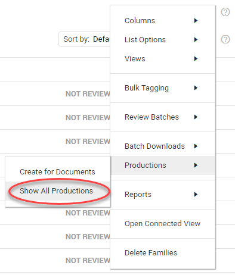
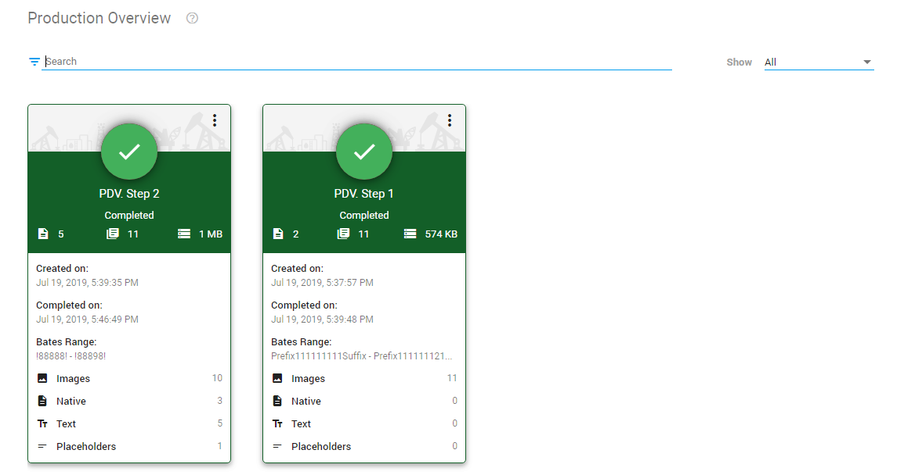
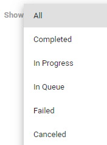

View all productions of the currently open matter.
On the Home page, select Production Overview.
Or, in Document List, select the Settings icon  , then select Productions > Show All Productions. The Production Overview will appear. All necessary information is displayed at first glance.
, then select Productions > Show All Productions. The Production Overview will appear. All necessary information is displayed at first glance.


Search or Filter
If there are many productions, use the search field to search for a specific production.

Or, filter to show only a subset of all productions.

Production States
Each production card shows the state color (for example, green for Completed), date on which the production was created, date on which the production was ended (for completed, failed and canceled productions), the total number of produced pages, and the production size on disk for completed productions.
Other information can include the produced Bates Range and number of produced Images, Natives, Text and Placeholders. Also, the number of skipped documents is displayed.


Production Card Options
Each production card has a number of options for further actions.

|
|
Note: Not all options are available for all Production Card states. |